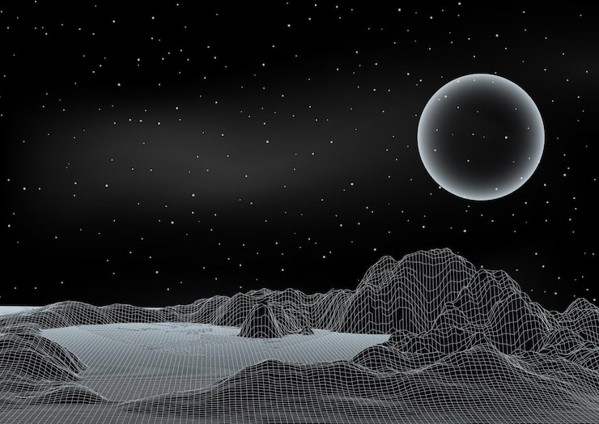

Interviews, but adaptive.
A premium environment for practicing technical interviews — focused evaluation, precise feedback, real progress.
01 / PRODUCT
01 — INTERVIEW ENGINE
Adaptive flows that respond to your answers in real time. No static forms.
02 — TECHNICAL PRACTICE
Curated challenges across difficulty with precise, editorial feedback.
03 — PERFORMANCE ANALYSIS
Track accuracy, streak, and scores over time. Understand your trajectory.

FINAL CTA
No setup, no noise. Just focused practice with intelligent evaluation and elegant feedback.